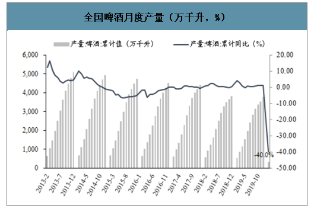

疫情催化需求受益品种，渠道库存处于低位。20年1-2月全国社会消费品零售总额52130亿元（-20.5%），其中日用品类837亿元（-6.6%），卫生用品的表现预期更为突出。对比03年“非典”期间的数据来看，生活用纸购买金额增长显著（卫生纸+5%、面巾纸+37%），属于典型的疫情受益品种。虽然2月生产企业面临物流运输、部分区域复工较迟拖累出货，但终端需求旺盛的背景下3月复工后预期表现优异。
日用品需求预期较为稳定，成本端受益于国际原油下跌。 塑料软包装下游主要对接日用消费，疫情期间表现相对具韧性、1-2月零售额仅下滑6.6%，预期企业订单下滑幅度较小；上游原材料主要以石油衍生品为主，3月初国际原油供需失衡引起油价迅速下跌，截止4月1日OPE一揽子原油价格为16.87美元/桶（较3月1日下跌66%），预计利好塑料软包装企业盈利能力提升。

疫情短期对下游啤酒和饮料消费造成压制，Q2预计迅速恢复。疫情期间外出餐饮消费急剧减少，对应啤酒饮料消费场景大幅减少（其中啤酒餐饮消费约占50%），尽管部分转向家庭消费场景，2020年1-2月仍然出现较大幅度下滑：啤酒产量315.9万千升（-40%），销售收入178.5亿（-77.76%）。金属包装企业订单受下游需求下滑较多影响一季度将承压，但啤酒和饮料消费频次高、预计伴随疫情好转Q2有望迅速恢复。
各行业增加值与用电量增速普遍下降，服务业受到的负面影响更大。受疫情影响，企业复工复产延迟、产业链不同程度受损，订单需求下滑、产品价格走低。一季度，工业增加值同比下降8.5%、用电量同比下降8.7%，其中消费品制造业、装备制造业、高耗能行业用电量同比分别下降19.9%、17.4%、7.0%。在疫情防控措施下，人员和物资流动受到一定限制，各类聚集性活动均被禁止，第三产业受到更大的负面影响。但受益于信息传输/软件和信息技术服务业保持高速增长，第三产业增加值同比下降5.2%，用电量同比下降8.3%，其中交通运输/仓储和邮政业增加值下降14.0%、用电量下降5.2%；住宿和餐饮业增加值下降35.3%、用电量下降22.8%；批发和零售业增加值下降17.8%、用电量下降15.5%；信息传输/软件和信息技术服务业增加值增长13.2%，用电量增长27.0%。疫情严重地区、经济发达省份受到明显波及，经济和用电出现大幅下滑。一季度，全国31个省份中30个省份GDP负增长，其中湖北下降39.2%，上海、广东、北京、山东、浙江、江苏分别下降6.7%、6.7%、6.6%、5.8%、5.6%、5.0%；31个省份中24个省份用电量负增长，主要集中于中东部地区，其中处于疫情中心的湖北增速最低（-22.2%），浙江（-15.8%）、江苏（-13.2%）、上海（-11.7%）、广东（-10.4%）、山东（-6.5%）等经济发达地区用电增速均低于全国平均水平。

总体来看，各省工业经济是经济增长的关键影响因素，其2019年一季度增长情况与GDP增速表现接近，具体排名变化有以下几点值得关注。 第一，以新疆为代表的中西部地区工业增加值显著好于全国水平。第二，四川工业增加值增速大幅高于全国水平，比全国增速高7.5个百分点，由2019年的全国第9位大幅升至第4位。第三，贵州和湖南稳定保持第一梯队。贵州省和湖南省继2019年名列全国第1和第5位之后，2020年一季度名列全国第5和第6位，依然稳居第一梯队，增速分别高于全国6.5和6.3个百分点。第四，湖北、浙江和河南三省份工业生产受疫情影响显著放缓，工业增加值增速较2019年分别下降53.6、16.8和14.6个百分点至-45.8%、-10.2%和-6.8%，排名较2019年大幅下降23、11和10位至第31、24和17位，拖累经济增速较上年下降46.7、12.4和13.7个百分点至-39.2%、-5.6%和-6.7 %。

受新冠肺炎疫情影响，我国1-2月份消费品市场短期下滑明显。为应对疫情冲击，中央和地方出台多项政策措施，着力扩大国内需求，挖掘居民消费潜力。3月份市场销售开始好转，消费市场转型升级持续推进，新兴业态加快发展。一季度，社会消费品零售总额同比名义下降19.0%，增速比上年同期回落27.3个百分点，比上年全年回落27.0个百分点。其中，3月社会消费品零售总额同比下降15.8%，降幅比1-2月收窄4.7个百分点。与全国大趋势类似，和上年同期相比，今年一季度各省份居民消费都明显萎缩。因为每个省份受疫情冲击的程度各不相同，加之产业结构存在差异，所以消费下降幅度差距较大。其中，有15个省份社会消费品零售总额降幅低于全国水平，广东省降幅与全国水平持平，湖北、新疆、黑龙江、海南降幅超过30%。

1. 强化短期政策应对，对冲疫情对重点行业发展的负面冲击。注重产业政策与货币政策、财政政策、收入分配政策、就业政策等方面的协调联动，对符合供给侧结构性改革既定导向的产业，尤其是交通运输、旅游、住宿餐饮、商贸零售、教育培训等受疫情冲击较大的现代服务业给予重点支持；继续减免制造业税费，合理分担企业疫情期间产生的用工、房租、利息等成本支出；坚持“房住不炒”定位，以及“稳地价、稳房价、稳预期”的调控目标，适当调整房地产企业融资政策，支持各地因城施策，尤其是疫情较严重地区优化调控政策稳定市场需求；加大市政基础设施与公共服务设施投入力度；密切关注湖北等疫情严重地区产业集群发展状况，支持产业链上下游在疫情结束后尽快有序复工复产。
2. 加快实施创新驱动，促进产业数字化、智能化转型升级。加大在基础研究、基础设施领域以及产业升级共性薄弱环节的公共投入，建立面向所有产业企业的开放式成果共享平台及综合服务平台，加大知识产权保护力度，营造有利于创新创业的制度环境，培育、激励、保护企业家精神；加快培育战略性新兴产业，促进先进制造业与现代服务业融合发展，支持各行业加快引入新一代信息技术，构建产业互联网，促进数字化、智能化转型，提升线上业务渗透率。如运用电子商务技术对传统农业、制造业、服务业企业进行互联网化改造，拓展移动营销渠道，优化业务流程，加强产品质量管控，提升售后服务效率；运用区块链技术建立新型信任机制，降低交易成本，打造透明可信的质量追溯体系，带动供应链的优化升级；运用人工智能、大数据、云计算、物联网等技术，提高企业运营与管理效率。
返回顶部